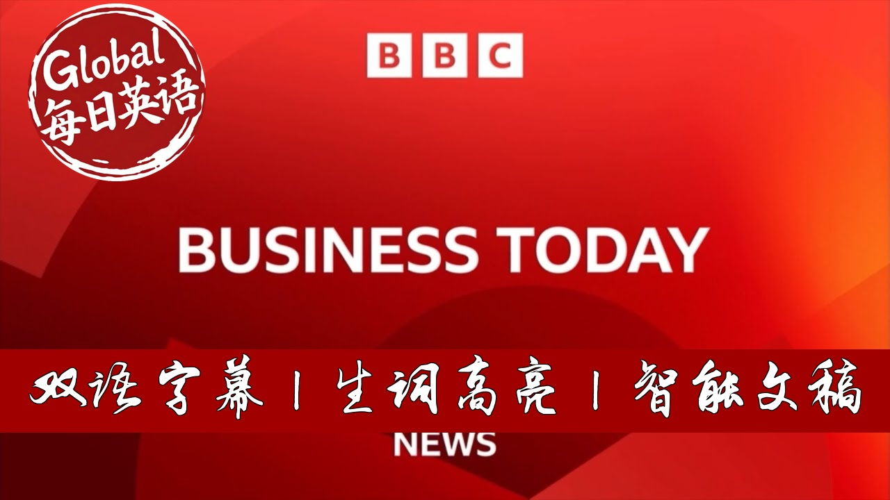

【BBC Business Today 20250826 特朗普对决美联储：央行理事突遭解职、隐形关税席卷全球、风电巨头项目叫停】
Summary: This today. Trump escalates his attack on the Federal Reserve by firing Governor Lisa Cook over alleged mortgage fraud, a move that jolts Asian markets. The US quietly expands steel and aluminum tariffs to hundreds of metal products, causing chaos among exporters like UK’s JCB. Meanwhile, the Trump administration halts a major offshore wind project by Ørsted, raising concerns over the future of renewable energy under his policies.
摘要： 特朗普总统以涉嫌抵押贷款欺诈为由，突然解雇美联储理事丽莎·库克，此举震动亚洲市场。美国悄然将钢铁铝关税扩大至数百种金属制品，英国建筑机械巨头JCB等出口商陷入混乱。同时，特朗普政府叫停丹麦风电巨头Ørsted的海上风电项目，引发对其可再生能源政策的担忧。

⏱️ Estimated Reading Time: 43 min.
📚 四级生词 📚 六级生词 📚 雅思生词 📚 托福生词 📚 专八生词 📚 SAT生词 📚 考研生词 📚 GRE生词
Trump versus the Fed.
The President fires Lisa Cook, one of the central bank's seven governors over allegations of mortgage fraud,
the move Joltz markets in Asia.
Also coming up, stealth tariffs the US quietly expands import taxes on steel and aluminium to hundreds of goods made from the metals.
The boss of JCB says they've been blindsided.
And negative energy shares a wind farm giant all-stead slum as the US cancels a major project.
How big a threat to the industry is Trump's war on renewables?
Welcome.
You're with Business Today with me, Sally Bundock in London.
Let's get started and our focus is on the world's most powerful central bank in the US.
President Trump has escalated his attack on the Federal Reserve, sacking Governor Lisa Cook with immediate effect.
He had called on her to resign last week after allegations she falsified documents on mortgage applications.
Miss Cook has been defiant, saying he has no authority to fire her and she will continue to carry out her duties.
Miss Cook, who is a Biden appointee, is one of seven Fed governors who decides on interest rates which President Trump has repeatedly demanded to be cut.
Well, the dollar is on the move as a consequence and US Treasury bronze have slid during the Asian trading session.
On concerns, there is a threat to the independence of the Federal Reserve.
Let's get our Asia Business Herb, Sarangana Tawari.
Is keeping across all the market action, Sarangana Tawari?
Yes, Sally.
As you can imagine, investors here are very exposed to the US dollar, very exposed to anything that the Fed says, especially at a time when they're looking for those lower interest rates and lower inflation.
But this really is an unprecedented move and a significant escalation of Trump's attacks on the independence of the US central bank.
Now as you mentioned in the last hour or so, we have had a comment from Lisa Cook.
She says no causes exist under the law and that Trump has no authority to remove her from her job.
She adds she will continue to carry out her duties to help the US economy.
Now the Trump administration, as you said, claims that Cook, who was nominated by former President Joe Biden in 2022, committed mortgage fraud by allegedly naming two different properties as her primary residence at the same time.
But the big question is, what is the legality of this?
And actually, Congress curved the President's authority to unilaterally fire a Fed governor in the Federal Reserve Act of 1913, which states that presidents can only do so for cause.
Now the law does not elaborate on what constitutes cause, but it's historically been understood to mean wrongdoing or dereliction of duty.
But importantly, if this goes through, Trump will be able to nominate Lisa Cook's replacement and essentially reshape the Fed's governing board for the next several years.
Fed governors typically serve 14-year terms and Ms. Cook is the first black woman to serve as a governor.
Now this running board for the next several years.
Fed governors typically serve 14-year to Trump administration, but we know that Trump has repeatedly criticized the central bank and its chair for not cutting those short-term interest rates.
Jerome Powell has so far resisted Trump's pressure, even as the President has threatened to fire him before his term as chair expires next year.
Jerome Powell has suggested in the last few days, though, that conditions may warrant an interest rate cut as the Fed proceeds carefully.
As you mentioned, the dollar is down on the news of Lisa Cook's potential removal and Asia markets aren't liking that news either.
OK, it's got everybody very nervous.
Thank you very much, Sir Angelo Tawari.
Let's get further reaction now to all of this from Russ Mold, whose investment director at AJ Bell.
Russ, we're all waking up this morning in Europe to this news of what the White House said was the immediate sacking of Lisa Cook.
She's fighting back.
And this is pulling down the dollar.
No surprise.
Your thoughts on reaction to all of this?
No, I think it's clear the latest stage in the President putting pressure on the American Central Bank.
We've had him call its lead governor, Jay Powell and chairman of Moron and Press for lower interest rates.
Governor Adriana Kugler stepped down early as replaced by a Trump loyalist, Steven Mirat, and who seen as one of the key.
All right, Russ, we seem to have lost our line with Russ Mold there who's giving us reaction to this news.
President Trump ordering the removal with immediate effect of Federal Reserve governor Lisa Cook.
If we can regain the line with Russ, we will restart that conversation with him to get his reaction to it.
But now let's move on to other stories and staying with the United States because there is a new twist in President Trump's trade war.
Is causing dismay and confusion around the world as well as at American ports?
Here in the UK, company bosses are pressing the government for urgent clarification.
So what is all the fuss about?
Well, they're being called stealth tariffs over the weekend after pressure from the US steel industry.
The administration brought in new rules, expanding tariffs on steel or aluminium to hundreds of products made from the metals.
So goods will be taxed by how much metal is in them.
More than 400 product categories will now be affected by this, everything from construction machine machinery to motorbikes, washing machines to garden furniture.
It's a big deal for many exporters to the US.
Steel and aluminium from most countries faces 50% tariffs currently after President Trump doubled the rate in June.
For the UK, it sits at 25% following its trade deal in May.
One supply chain expert estimates the move will affect at least 320 billion dollars worth of exports to the US.
Many UK companies are deeply worried about this, not least the construction equipment maker JCB, 300,000 of its diggers and machines head for the US will be hit by the tariffs at a cost of hundreds of millions of pounds.
Its boss has described the situation as chaos and is holding a meeting with the UK's business secretary later today.
Well, one person trying to make sense of all of this is Cindy Allen, Chief Executive and Trade Force multiplier in Memphis, Tennessee, advising companies on imports and exports.
Cindy, you and I are having regular discussions about the latest news from the White House.
What do you make of this move?
Good morning, Sally.
Yes, this seems to be a reoccurring theme.
It was indeed a stealth move by the White House.
These tariffs were announced on Friday to take effect on Monday and no one heard about it.
No one implementing these tariffs, no one at CBP, the US Customs and Border Protection were prepared for this.
So it was quite the move and quite a busy weekend trying to understand the complexities of this.
And it is complex, Cindy, because sorry to interrupt you because I know time is tight, but I'm just wondering, how do you work out how much a steel aluminium is in your motorbike that you've made and therefore what are you facing in terms of tax on that?
Many companies are trying to understand just that and they're deploying and turning to technology to really trace all of the components of their product back to the origin and understand.
And it's not just understanding the duties, it's understanding where that aluminum and steel came from because many products contain steel and aluminum from multiple sources, multiple countries and understanding that is taking a lot of time and effort.
In the meantime, if companies don't know where those goods came from, they're forced to pay higher tariffs and then go back and claim them from the government.
So it's been chaos here for those who are trying to implement the new tariffs and those who are trying to collect it at customs as well.
I was just going to say, I mean, how on earth do customs officials work this out and police this?
It must be extremely difficult.
Yes, we have seen a lot of fatigue by customs, especially as a lot of the older folks like myself are retiring from customs and moving on in their careers.
CBP has been given additional staffing money to bring on some individuals, but it takes time to train those like any other industry.
We are seeing increased enforcement, those funds and those individuals are going into enforcement positions.
So they are using the same tools that the trade is using in technology to understand where these goods are coming from.
And presumably Cindy, you know, the consequences of this is more inflationary pressure in the US.
It has to be.
Yes, we're seeing the production matrix index is going down, production is going down and it's ironic that it's believed that the US steel industry was on pushing to have these section 232 duties expanded.
They've seen production decrease since the 232 tariffs and that's because a lot of the products that they produce are reliant on other inputs, other steel from other companies and those individuals in companies who are manufacturing products here are being impacted by the tariffs just like everyone else.
So it has had a chilling effect, I think, on the economy and will continue to have an impact on the manufacturing industry.
Cindy, thank you once again for making sense and explaining what we do know about these latest changes.
I may talk to you again soon.
Who knows?
Cindy, thank you so much.
Thank you.
Now, as you've been hearing, South Korean President Lee Jae-miung has been at the White House for talks.
He's agreed with President Trump to work on peace with North Korea.
But of course, they've also been talking business.
Korean air has agreed to buy more than 100 Boeing jets and there are plans to cooperate on shipbuilding as air and thermal reports.
You've heard of MAGA, Make America Great Again.
Now meet Moscow, Make America's shipbuilding great again.
The play on President Trump's own campaign slogan is bound to be music to his ears.
Leaders from countries around the world have been working to secure trade deals with President Trump and his deputies, and this week's meetings between Trump and South Korea's President Lee is no exception.
South Korea has offered a $150 billion initiative that's intended to bolster America's shipbuilding industry, which was once fruitful and now just accounts for less than 1 percent of the global shipbuilding sector.
In trade negotiations, the U.S. has been prioritizing goods and industries that it links to national security.
And because geopolitical rival China accounts for more than 50 percent of the shipbuilding industry, shipbuilding could be an appealing industry to bolster.
President Trump sounded enthusiastic.
But we're going to be buying ships from South Korea, but we're also going to have them make ships here with our people using our people.
And we're going to go back into the shipbuilding business again.
South Korea's argument is that it has the expertise to help the U.S. lead on this front.
The country accounts for 30 percent of the industry and could share its know-how as well as its cash.
The part of that $150 billion package that South Korea is offering includes building new shipyards in the U.S. and training up a workforce.
South Korea has been talking the talk on Tuesday.
Its leader will walk the walk.
President Lee is scheduled to visit a shipyard in Philadelphia, and that was acquired last year by Hanwa Group, a storied conglomerate in South Korea.
Erin Delmo, now let's head to France where markets have been hit by the prospect of another government collapse within two weeks.
This is after Prime Minister Francois Beirut called the confidence vote in Parliament for September 8th over unpopular plans to fix the country's finances.
The far-right national rally, the Greens and the left-wing France unbout have all said they won't back him in the vote.
Monsieur Beirut is trying to push through 44 billion euros worth of spending cuts and tax rises.
He told a press conference France has no choice.
Is it a risk?
Yes, it's a risk, but the bigger risk, the supreme risk is to do nothing.
The supreme risk is allowing a public debate for the situation to get worse and see confrontations.
People who say we will block everything and deep down people who think that it's not all that bad.
Monsieur, it is that bad.
I cannot say this any more clearly.
Well, let's discuss this with Leo Barrencu, who is senior economist at Oxford Economics based in Paris.
Leo, good to have you on the programme.
Is he right?
Is the Prime Minister right saying that this is a huge risk?
How bad is the debt situation in your opinion?
Yes, well, the debt situation in France has been getting a thing that is really worse for the last couple of years.
Even though the effective interest rate on the debt is still rather low, the situation is gradually worsening to the point that debt could become clearly unsustainable in the next few years, given that rates have gone up everywhere and even more so in France.
So yes, I think it's right to say that the sustainability of French debt is clearly going to be a large problem in the years to come.
Even though crisis, short-term crisis, rise in terms of financing, but it's going to become a larger, larger burden and very quickly so.
And Leo, France is not alone.
We're seeing the same problem here in the United Kingdom and in many economies around the world where public debt is climbing and the interest to pay on that is also climbing.
But this feels a bit like Groundhog Day to me.
Michelle Barnier was ousted only last year after a very short time in the job trying to do the same thing.
So what do you think will happen this time?
Yes, yes, completely.
So I would say France is back in a political crisis mode after like a short period of maybe six months of stability.
It was kind of a fixed ability because there were never really hard matrices.
So there was never any kind of political backing behind the fiscal consolidation plan that he had put on the table.
So the shutdown that we are seeing now was bound to happen a sooner or later I think and Bill hasn't really triggered the crisis, he merely accelerated it.
One of the key things maybe with Barnier last year is that this time, President Macron can dissolve the National Assembly and call the snap election if he wants to, which he wasn't able to do when Bani fell in December 2024.
Yeah, but to be fair, President Macron called a snap election not so long ago and that didn't work well for him at all.
Is he likely to do that again?
I would say it's not likely to that again, but anything can happen.
I think based on the latest declarations, the president seems reluctant to call for another snap election, as he said, given that the latest balls do not suggest that it would improve as a standing of his party with an parliament, quite the opposite actually.
But there will probably still be strong pressure on him to do so from opposition parties.
But I think yes, it's not the most likely scenario.
It's the most likely scenario that we will see another centuries prime minister, much like Barrow, that we'll try to implement some kind of fiscal consolidation that will be less ambitious, probably than what Barrow had in mind.
Okay, so it also requires a few questions.
So what you're saying is his plans will be watered down perhaps to sort of get the other politicians on board.
But in the meantime, what damage is all this political instability doing to France?
As I assume, you said interest on the debt is not that high at the moment, but that will go upwant it if there is seen to be political instability for some time to come.
Yes, sure.
I mean, the actual cost of the debt is very, always very slow to go up because it depends on how fast you roll over the debt and the maturity of French debt is quite high.
So even though your financial costs go up, it takes a while to like feed through the rest of the debt.
Yes, as you mentioned, political stability is likely to make financial costs go up and it already did somewhat yesterday.
Leo, good to get your take this morning on the situation in France.
Thanks for joining us.
Pleasure.
Around the world and across the UK, this is BBC News.
Donald Trump's second term has brought sweeping changes both at home and on the international stage.
They charge us, we charge them.
Join our teams for the latest developments and reaction.
See the headlines as they happen with breaking news alerts on the news app.
And get in depth coverage on BBC.co.uk slash news.
Follow the story for all the latest with BBC News.
Panorama is an increasingly popular drug for young people.
When I took get for the first time, it would lighten up in elves.
We have seen as young as 13 years old.
Panorama meets those on the front line.
I have never seen something so destructive.
It's nearly died that night.
Panorama, Britain's ketamine crisis.
Watch now on BBC iPlayer.
You're with business today.
I'm Sally Bundock.
Welcome.
If you've just joined us now, let's look at the battle over renewable energy because shares of the world's largest wind farm developer Allsted slumped after the Trump administration halted a major offshore wind project off road island, which was 80% finished.
The Danish firm Allsted is the latest victim of President Trump's pushback on renewable investments.
Another massive wind project off New York by Equinole of Norway was cancelled in April.
Despite the shift in policy in the US, though, the direction of travel is clear in the rest of the world where they're pushing ahead with clean energy.
The industry as a consequence is booming.
According to the International Energy Agency total investment in energy will hit $3.3 trillion this year.
And two-thirds of that money is in renewables with only a third in traditional fossil fuels, oil, gas and coal.
Well, let's discuss this theme because one of the other big issues facing the industry is artificial intelligence.
It is a massive consumer of energy.
When we do searches using AI tools, it uses so much more energy than the traditional way we would use online search.
But used in the right way could AI actually help save energy?
Well, to talk about all of these issues, Rob West, chief executive of Thunder, said energy and energy consultancy based in Tallinn Estonia, welcome to the programme.
Hello.
Thank you for having me.
Mr, I mean, there's a lot going on in this space as we've just touched on, but I just want to get your reaction, first of all, to President Trump and the rolling back of some huge renewable projects going on.
All stead is the latest victim.
I mean, this project, it's been overseeing and undergoing, is nearly finished.
And yet the US has pulled the plug.
Yeah, I mean, there's two things going on there.
There's a growing debate about the total system cost of integrating renewables into the grid.
One position in the US administration is that renewables can be like, and this is what they say, a teammate that doesn't show up on game day.
So the example is that peak load, that absolute peak time in demand in the grid, there are times when actually there's no contribution from wind and solar.
And so you have to maintain an entire separate system.
You don't get rid of what you had before.
You just add something else on top of it.
So, you know, I rent an apartment, it's $1,000 a month.
I could rent a second apartment that's $800 a month.
The second apartment is clearly cheaper, but if you end up having to rent both, then clearly the total system costs go up.
And that can be an issue when you do the modeling around wind-based systems.
I differentiate between wind and solar.
People like to group them together, so they're very, very similar.
To me, wind and solar, they're like, aster and turnips.
Yes, in the world of starch is they're both not bred, but they're the commonality ends.
And solar is deflating in a way that is just truly remarkable, and probably not going to be subject to the same scalebacks and setbacks that the wind is to be seen.
What you mean by that, solar is deflating.
That to me, that's a bit of energy jargon.
What do you mean by that?
Well, so the costs of solar have halved again in the last five years.
The costs of wind have actually gone up by 30% to 40%.
So solar is a semiconductor technology.
It takes light coming in from the sun and converts it directly into energy.
It's the first time, really, in the history of the energy industry, we've been able to generate energy from semiconductors, not from something turning or something burning.
But when you could have given us the analogy of the flats, the 1,000 or a dollar a month and the $800 a month flats, you just want one, because you want to pay for both.
But that's surely every country is facing that scenario when it comes to energy, as they transition from fossil fuels to cleaner energy.
I mean, that is a process we're in, isn't it?
Therefore, you have to have both flats, don't you, for a period of time.
So I think about it more of a period of addition rather than transition.
And there's different things going on in different countries.
The US has one of the lowest costs of natural gas anywhere in the world.
So the data centers are almost all getting powered by natural gas.
And you know, we have much higher gas prices and that changes the calculus about total system costs of integrating renewables.
But when then solar are different in their cost trajectory.
Sure.
And in how easily are to back up?
And let's get on to this point of the AI scenario, because we're all, we are covering here on BBC News quite a bit.
Just the sheer scale of demand for energy is a consequence of AI.
And yet the world's biggest technology companies are just plowing billions and billions of capital expenditure into AI as we are all wanting this new tech.
But how can it be used to help in the energy scenario?
Well, there's lots of spaces.
I mean, our energy system is woefully inefficient.
About 80% of all primary energy gets wasted.
The average, we produce 60 billion tons of year of stuff on planet Earth.
And the thermodynamic minimum energy, you know, is about 80% lower than the amount of energy we currently use for that.
So there are great examples in industrial history where new process technologies come along or get invented, maybe a new catalyst, maybe a new electro-winning solvent.
And suddenly, you know, you can see the ability to produce some material, get collapse in cost, collapse in energy intensity, and that benefits everybody.
So when are we going to see these shifts as it were?
Well, the ones I just said are probably longer term, but already you're seeing some really interesting things in the way we manage our grid.
So yeah, we're talking about power prices before.
Actually, two thirds of what you pay in your power price at home is running the network.
Because the network is very, very poorly utilized.
It's about 35% utilized.
Have all these wires that carry the power from where it's generated to where it's used?
And the average wire is only running at about 35% of its capacity.
Rob, can I ask you a quick question?
We nearly had a time.
Are you on holiday in Estonia or are you based there?
I live here.
I run my research consultancy from this wonderful cold climate part of the world where, you know, I've had nothing but wonderful experiences.
Well, it's good to talk to you and get your take on what's going on with the energy sector.
Thank you so much for letting us pick your brains this morning, live from talent in Estonia.
Let's just quickly bring you up to date on some of the top stories on our website.
We have got the news that, of course, President Trump on his social media platform ordered the immediate sacking of a Lisa Cook, a federal reserve governor.
She has come back saying she will fight this legally.
He has not got the legal powers to remove her from that job.
Markets are on the move in reaction to that surprise and unprecedented move.
That's the latest here on BBC News.